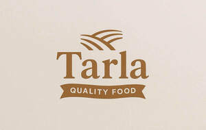

Trade Mark Journal No.2025/045 7 November 2025
UK00004284214 27 October 2025 (29,30,31,32,33,35)

- Class 29
- Meat and meat products; Soups and stocks, meat extracts; Fish, seafood and molluscs, not live; Poultry; Game; Processed fruits, fungi, vegetables, nuts and pulses; Preserved fruits; Dried fruits; Cooked fruits; Jellies, jams, compotes, fruit and vegetable spreads; Tomato paste; Nut oils; Processed nuts; Ground nuts; Seasoned nuts; Spiced nuts; Salted nuts; Roast nuts; Dried nuts; Candied nuts; Dried pulses; Canned pulses; Processed pulses; Preserved pulses; Pickles; Birds’ eggs and egg products; Milk; Milk products; Edible oils and fats; Olive oil; Olive paste; Olive puree; Preserved olives; Processed olives; Tinned olives; Prepared meals consisting primarily of meat; Prepared meals consisting primarily of fish; Prepared meals consisting primarily of poultry; Prepared meals consisting primarily of vegetables; Crisps; Accessories, parts and fittings relating to the aforementioned goods.
- Class 30
- Dried herbs; Processed herbs; Preserved herbs; Herb sauces; Savory sauces, chutneys and pastes; Paprika; Macaroni; Pasta; Rice; Coffee, teas and cocoa and substitutes therefor; Accessories, parts and fittings relating to the aforementioned goods.
- Class 31
- Agricultural and aquacultural crops, horticulture and forestry products; Fresh fruit, nuts, vegetables and herbs; Raw nuts; Unprocessed nuts; Fresh herbs; Raw herbs; Unprocessed herbs; Fresh pulses; Fresh olives; Raw olives; Unprocessed olives; Seeds, bulbs and seedlings for planting; Plants and their fresh produce; Flowers; Foodstuff and fodder for animals; Malts and unprocessed cereals; Accessories, parts and fittings relating to the aforementioned goods.
- Class 32
- Beer and non-alcoholic beer; Waters; Non-alcoholic beverages; Fruit beverages and fruit juices; Syrups for beverages; Accessories, parts and fittings relating to the aforementioned goods.
- Class 33
- Alcoholic beverages (except beer); Accessories, parts and fittings relating to the aforementioned goods.
- Class 35
- Online, offline and mail-order retail and wholesale services relating to: meat and meat products, soups and stocks, meat extracts, fish, seafood and molluscs, not live, poultry, game, processed fruits, fungi, vegetables, nuts and pulses, preserved fruits, dried fruits, cooked fruits, jellies, jams, compotes, fruit and vegetable spreads, tomato paste, nut oils, processed nuts, ground nuts, seasoned nuts, spiced nuts, salted nuts, roast nuts, dried nuts, candied nuts, dried pulses, canned pulses, processed pulses, preserved pulses, pickles, birds’ eggs and egg products, milk, milk products, edible oils and fats, olive oil, olive paste, olive puree, preserved olives, processed olives, tinned olives, prepared meals consisting primarily of meat, prepared meals consisting primarily of fish, prepared meals consisting primarily of poultry, prepared meals consisting primarily of vegetables, crisps, dried herbs, processed herbs, preserved herbs, herb sauces, savory sauces, chutneys and pastes, paprika, macaroni, pasta, rice, coffee, teas and cocoa and substitutes therefor, agricultural and aquacultural crops, horticulture and forestry products, fresh fruit, nuts, vegetables and herbs, raw nuts, unprocessed nuts, fresh herbs, raw herbs, unprocessed herbs, fresh pulses, fresh olives, raw olives, unprocessed olives, seeds, bulbs and seedlings for planting, plants and their fresh produce, flowers, foodstuff and fodder for animals, malts and unprocessed cereals, beer and non-alcoholic beer, waters, non-alcoholic beverages, fruit beverages and fruit juices, syrups for beverages, alcoholic beverages (except beer); Online, offline and mail-order retail and wholesale services in relation to food and beverages; Business administration, consultancy, organisation and management relating to food and beverages; Retail and wholesale brand consultancy and development; Franchising services related to food and beverages; Advertising, marketing and promotion services relating to food and beverages; Influencer marketing and brand promotion for food and beverages products; Marketing consultancy for food and beverages businesses; Social media marketing for food and beverages products; Arranging, conducting and organising commercial events relating to food and beverages; Food and beverages show organisation for commercial purposes; Online marketplace services for food and beverages products; Providing online marketplaces for sellers of goods and or services; Provision of an online marketplace for buyers and sellers of goods and services; Providing commercial information and advice to consumers in the food and beverages industry; Sales administration in relation to food and beverages; Advice, consultancy and information relating to the aforementioned services.
Food Land (UK) Limited
Representative: Briffa